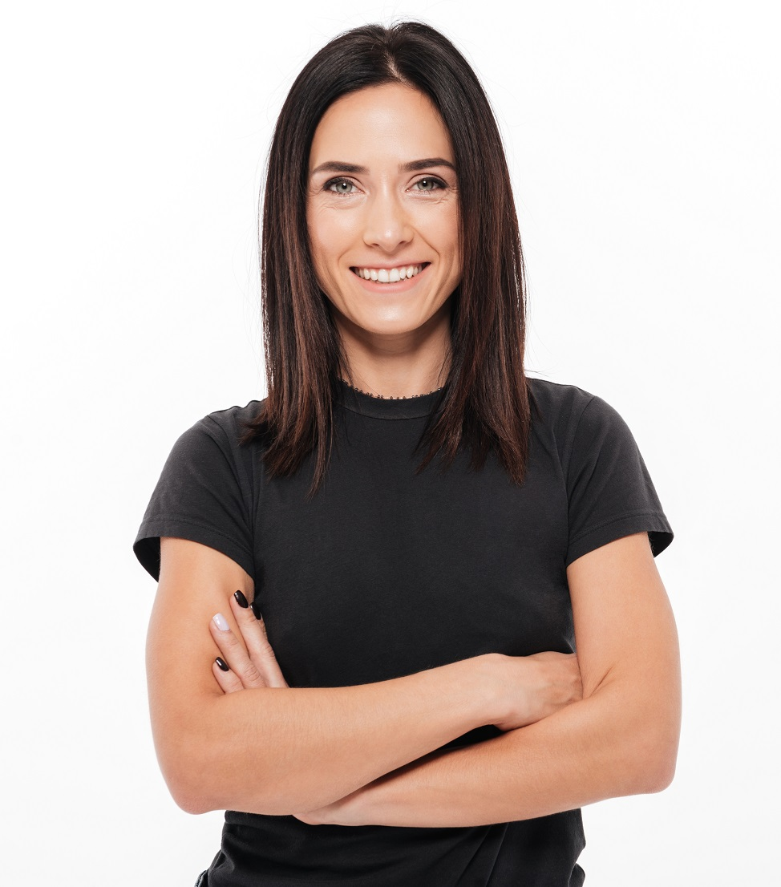

La Universidad Autónoma de Tecnología es la primera universidad
de todo el mundo en ser manejada total y
completamente
por robots.

"Mi experiencia en la Universidad de Tecnología Avanzada fue absolutamente transformadora. Elegí estudiar
Ingeniería Robótica y Automatización, una decisión que cambió mi vida de formas que nunca imaginé. El
programa académico era desafiante, pero a la vez, emocionante. Aprendí a diseñar, programar y mantener
robots avanzados para aplicaciones en diversas industrias. La tecnología robótica y la inteligencia
artificial se convirtieron en mis compañeros de estudio constantes, y mis profesores robots, verdaderos
expertos en el campo, estaban siempre a mano para ayudarnos en nuestras actividades. Sin duda, esta
universidad es el lugar donde mi pasión por la tecnología se convirtió en una carrera exitosa."
-María Pérez
El desarrollador de la universidad es Raúl Benítez, Doctor en Ciencias Físicas. Raúl trabajó en la Universidad Politécnica de Catalunya (UPC), donde impartió docencia en teoría de control, robótica, reconocimiento de patrones y procesado de imágenes en diferentes estudios de grado y máster de la UPC. Su investigación allí se basó en el análisis de sistemas complejos en fisiología, en los que aplicó técnicas de inteligencia artificial, modelización probabilística y dinámica nolineal.